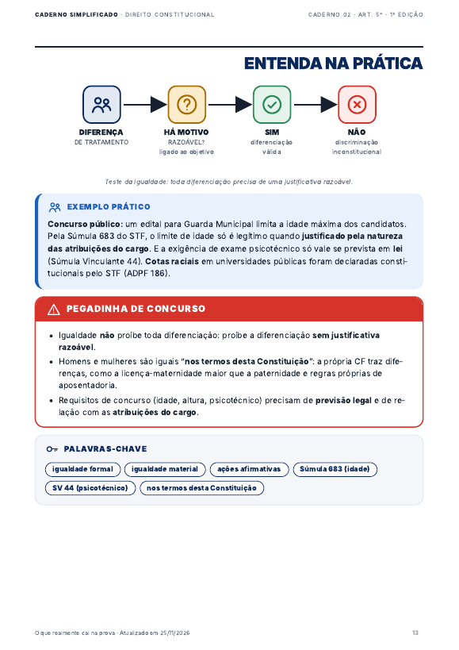
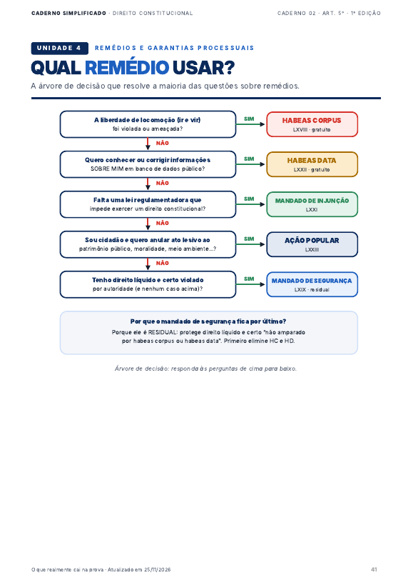
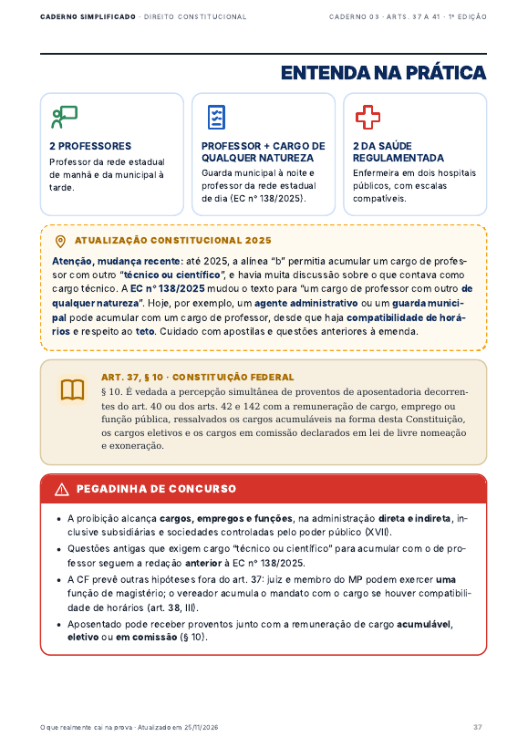

Cinco paradas importantes no caminho de quem estuda para concursos.
Este mini guia foi feito para quem está começando e sente que os conteúdos de concurso parecem difíceis demais: leis longas, palavras técnicas, muitas regras para decorar.
Aqui você vai estudar cinco assuntos que aparecem com frequência nos editais de Guardas Municipais, de carreiras policiais e de concursos administrativos. Cada um foi explicado do jeito que os nossos cadernos explicam: linguagem simples, esquemas visuais, exemplos do dia a dia e os alertas de prova que mais derrubam candidatos.
No fim, você testa o que aprendeu com 11 questões autorais e confere o gabarito comentado.
Os trechos de lei foram conferidos no portal oficial da legislação federal (Planalto) em 25/11/2026. Este material é introdutório: confira sempre o edital do seu concurso.
Um método em quatro passos para aproveitar cada assunto.
Um assunto por dia, em cerca de 30 minutos. No sexto dia, faça todas as questões de uma vez.
Releia só os esquemas e os quadros Memorize 1, 7 e 30 dias depois. É revisão rápida, e funciona.
Os quatro primeiros artigos da Constituição dizem quem o Brasil é, aonde quer chegar e como se comporta no mundo.
Art. 1º A República Federativa do Brasil, formada pela união indissolúvel dos Estados e Municípios e do Distrito Federal, constitui-se em Estado Democrático de Direito e tem como fundamentos: I - a soberania; II - a cidadania; III - a dignidade da pessoa humana; IV - os valores sociais do trabalho e da livre iniciativa; V - o pluralismo político.
Parágrafo único. Todo o poder emana do povo, que o exerce por meio de representantes eleitos ou diretamente, nos termos desta Constituição.
Pense no Brasil como um prédio. Os fundamentos são os pilares: sem eles, o prédio cai. Por isso são substantivos (coisas que já existem). “União indissolúvel” quer dizer que nenhum Estado ou Município pode se separar do país.
MNEMÔNICO: SO-CI-DI-VA-PLU: SOberania, CIdadania, DIgnidade da pessoa humana, VAlores sociais do trabalho e da livre iniciativa, PLUralismo político.
Os arts. 1º, 3º e 4º lado a lado: o esquema que resolve a maioria das questões.
TRUQUE DE PROVA: Tem verbo? Art. 3º. Fala de outros países ou povos? Art. 4º. É um valor-base do país? Art. 1º.
O artigo mais cobrado da Constituição começa protegendo cinco direitos.
Art. 5º Todos são iguais perante a lei, sem distinção de qualquer natureza, garantindo-se aos brasileiros e aos estrangeiros residentes no País a inviolabilidade do direito à vida, à liberdade, à igualdade, à segurança e à propriedade, nos termos seguintes:
Os 79 incisos do art. 5º detalham esses cinco direitos.
O direito é a sua casa; a garantia é o cadeado. Se alguém prende você ilegalmente (viola o direito de ir e vir), o habeas corpus é a chave que abre a cela.
Quatro situações comuns e o inciso do art. 5º que resolve cada uma.
As cinco regras de ouro de quem trabalha no serviço público, no caput do art. 37.
Art. 37. A administração pública direta e indireta de qualquer dos Poderes da União, dos Estados, do Distrito Federal e dos Municípios obedecerá aos princípios de legalidade, impessoalidade, moralidade, publicidade e eficiência e, também, ao seguinte:
MNEMÔNICO: LIMPE: Legalidade, Impessoalidade, Moralidade, Publicidade e Eficiência. Valem para a administração direta e indireta de todos os Poderes, na União, nos Estados, no DF e nos Municípios.
Use este mapa para revisar. Tente explicar cada galho em voz alta, sem olhar.
MEMORIZE: A eficiência foi a última a entrar no art. 37, com a Emenda Constitucional nº 19/1998.
Dois jeitos de responder: o que a lei diz e como a doutrina analisa um crime.
Art. 1º Considera-se crime a infração penal que a lei comina pena de reclusão ou de detenção, quer isoladamente, quer alternativa ou cumulativamente com a pena de multa; contravenção, a infração penal a que a lei comina, isoladamente, pena de prisão simples ou de multa, ou ambas, alternativa ou cumulativamente.
Para a doutrina majoritária (teoria tripartida), crime é um fato típico, ilícito e culpável. Só existe crime se os três degraus forem vencidos.
Pense numa escada de três degraus. Primeiro: a conduta está descrita na lei como crime? Segundo: ela foi contra o Direito, ou havia uma justificativa, como a legítima defesa? Terceiro: dá para reprovar o autor, ou ele era, por exemplo, menor de 18 anos? Só quem chega ao topo comete crime.
Responda às perguntas na ordem. Basta um “não” para não haver crime.
Art. 23. Não há crime quando o agente pratica o fato: I - em estado de necessidade; II - em legítima defesa; III - em estrito cumprimento de dever legal ou no exercício regular de direito.
Pedro é atacado com uma faca na rua e se defende com um empurrão que machuca o agressor. A lesão é um fato típico, mas Pedro agiu em legítima defesa: repeliu, com moderação, uma injusta agressão atual (art. 25). O fato não é ilícito, logo não há crime.
A disciplina que aparece em praticamente todos os concursos, e que se aprende com método.
É entender o que está escrito. Responde à pergunta: “o que o texto diz?”. Pistas na questão: “segundo o texto”, “de acordo com o autor”.
É tirar conclusões que o texto permite, sem inventar. Responde: “o que se pode concluir?”. Pistas: “infere-se”, “depreende-se”, “conclui-se”.
| Sentido | Exemplos | O que indica |
|---|---|---|
| Oposição | mas, porém, no entanto, contudo, todavia | vem aí a ideia mais importante |
| Conclusão | portanto, logo, por isso, assim | o resultado do raciocínio |
| Causa | porque, pois, já que, visto que | o motivo de algo |
| Concessão | embora, ainda que, mesmo que | admite algo, mas mantém a ideia principal |
DICA DE OURO: depois de mas, porém, no entanto, quase sempre vem a ideia que o autor quer defender.
Um método em cinco passos, aplicado a um texto curto escrito para este guia.
Durante muito tempo, as praças foram vistas apenas como lugares de passagem. Hoje, no entanto, muitas cidades perceberam que um espaço público bem cuidado muda a rotina de um bairro inteiro: atrai famílias, movimenta o comércio local e reduz a sensação de insegurança. Não basta, porém, instalar bancos e luminárias. Sem manutenção constante e sem a participação dos moradores, a praça reformada volta a ser abandonada em poucos meses. Por isso, especialistas defendem que a revitalização seja pensada como um processo contínuo, e não como uma obra que termina no dia da inauguração.
As questões 9, 10 e 11 usam este texto. Tente resolvê-las aplicando o método.
Questões autorais, no estilo de concursos. Resolva sem consultar e confira o gabarito na página 17.
Constitui fundamento da República Federativa do Brasil, nos termos do art. 1º da Constituição:
Sobre os objetivos fundamentais da República (art. 3º), assinale a alternativa correta.
Moradores de um bairro pretendem fazer um protesto pacífico, sem armas, numa praça pública. Segundo a Constituição, eles devem:
Com mandado judicial de busca, policiais querem entrar numa casa às 23h, sem consentimento do morador e sem flagrante. Nesse caso:
São princípios expressos no caput do art. 37 da Constituição:
O prefeito mandou colocar sua foto e o slogan “Gestão Fulano” nas placas de todas as obras municipais. A medida viola, de modo mais direto, o princípio da:
Segundo a Lei de Introdução ao Código Penal, a infração penal para a qual a lei comina, isoladamente, pena de prisão simples é:
Ana, atacada por um agressor armado com uma faca, defendeu-se moderadamente com os meios de que dispunha e feriu o agressor. Segundo o Código Penal:
Leia o texto da página 13. A ideia principal defendida no texto é a de que:
No trecho “Hoje, no entanto, muitas cidades perceberam...”, a expressão “no entanto” estabelece relação de:
De acordo com o texto da página 13, é correto inferir que:
PRÓXIMO PASSO: terminou? Confira o gabarito comentado na próxima página e anote os assuntos em que errou para revisar.
| 01 | 02 | 03 | 04 | 05 | 06 | 07 | 08 | 09 | 10 | 11 |
|---|---|---|---|---|---|---|---|---|---|---|
| C | C | C | B | B | B | C | B | C | C | B |
O pluralismo político é fundamento (art. 1º, V). A independência nacional e a prevalência dos direitos humanos são princípios do art. 4º; erradicar a pobreza e garantir o desenvolvimento nacional são objetivos do art. 3º.
É o texto do art. 3º, III. As alternativas A e B invertem os verbos: a pobreza é erradicada e as desigualdades são reduzidas. Soberania e dignidade são fundamentos (art. 1º).
Art. 5º, XVI: a reunião independe de autorização; exige-se apenas o prévio aviso à autoridade competente, sem frustrar outra reunião anteriormente convocada para o mesmo local.
Art. 5º, XI: sem consentimento, a entrada só é permitida em flagrante, desastre ou para prestar socorro (a qualquer hora), ou durante o dia, por determinação judicial.
LIMPE. Razoabilidade, motivação, supremacia do interesse público e proporcionalidade são princípios implícitos na Constituição.
O art. 37, § 1º, proíbe nomes, símbolos ou imagens que caracterizem promoção pessoal de autoridades na publicidade oficial, expressão do princípio da impessoalidade.
Pelo art. 1º do Decreto-Lei nº 3.914/1941, crime é punido com reclusão ou detenção; contravenção, com prisão simples e/ou multa.
Legítima defesa (art. 25) é excludente de ilicitude: “não há crime” (art. 23, II). O fato é típico, mas não é ilícito.
A tese aparece depois do conectivo conclusivo “Por isso”. A é a visão antiga que o texto supera; B contradiz o texto (“Não basta”); D contradiz; E é redução (o comércio é um dos benefícios).
“No entanto” é conectivo de oposição (adversativo): contrapõe a visão antiga (praças como passagem) à percepção atual.
O texto afirma que, sem manutenção, a praça “volta a ser abandonada em poucos meses”. A é extrapolação (o texto fala em reduzir a sensação de insegurança); C, D e E contradizem o texto.
Uma coleção de 20 cadernos digitais desenvolvidos para ajudar concurseiros a organizar seus estudos, compreender conteúdos importantes, revisar matérias e estudar com mais clareza.
E outras disciplinas.



Este mini guia é apenas uma pequena demonstração do que você encontrará na coleção completa MAPA DA APROVAÇÃO.
Conheça os 20 cadernos completos e descubra uma maneira mais organizada de estudar para concursos.